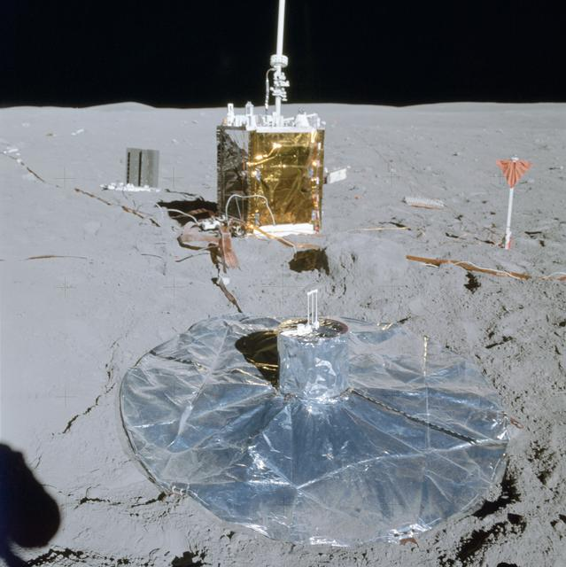

The scientific instruments that helped NASA study the Moon long after astronauts returned to Earth.

The Apollo Lunar Surface Experiments Package, known as ALSEP, was a collection of scientific instruments installed by astronauts on the Moon during Apollo missions. These instruments helped scientists understand the Moon's environment and internal structure.
ALSEP included different experiments such as seismometers to detect moonquakes, heat-flow experiments and instruments to study the lunar environment. It sent valuable scientific data back to Earth.
ALSEP stations were deployed during Apollo 12, Apollo 14, Apollo 15, Apollo 16 and Apollo 17 missions between 1969 and 1972.
The instruments were designed to operate directly on the lunar surface and transmit their findings to Earth. Astronauts did not need to bring them back after completing their missions.
NASA ended operations of the ALSEP stations on September 30, 1977. Although they stopped sending data, the scientific instruments and equipment remain at their original locations on the Moon.
← BACK TO THE MOON